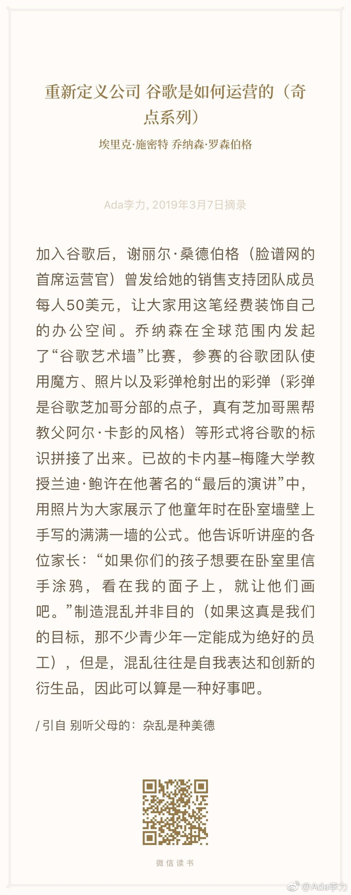

#读书# 这段让我想起来小时候我第1次拥有自己的单人床时，我父母把那个房间粉刷得干干净净，我也开心得要命，用毛笔在床头的白墙上写了四个大字："李力的床"，我那时可能刚上小学二年级，大概也很得意自己能写字了。结果当然是我妈妈暴怒，估计我挨了一顿揍，但也不是特别记得了。我的涂鸦也被再次粉刷盖住了。如果环境不允许，人的创造力是很容易被抑制住的。现在如果我的小孩也这样写这些字的话，我会觉得是挺有意思的一件事情，会保留下来。
惊奇微博上这么多人在推广电动牙刷牙线，是一个不知名的品牌。几乎我关注的大v都接了这个广告，包括有400万粉丝，但一直没接过广告的严峰老师。这确实唤起了我在这方面的注意，于是我去买了飞利浦的电动牙刷，和洁碧的水牙线。想起前一段时间对朋友说，像我这样的消费者，其实是让厂家相当讨厌的一个群体。
微博上可以对没有关注人的评论和赞，设置为不提醒，可能错过一些信息，我还是觉得这个功能很不错。WX圈就没有这个功能，我好友加得太随意，经常发现不认识点赞的人。估计点赞也成为了某种刷屏刷存在感的方式，有个卖珠宝找代理的，每条必点赞，这么赞了两星期，我把他拉黑了。